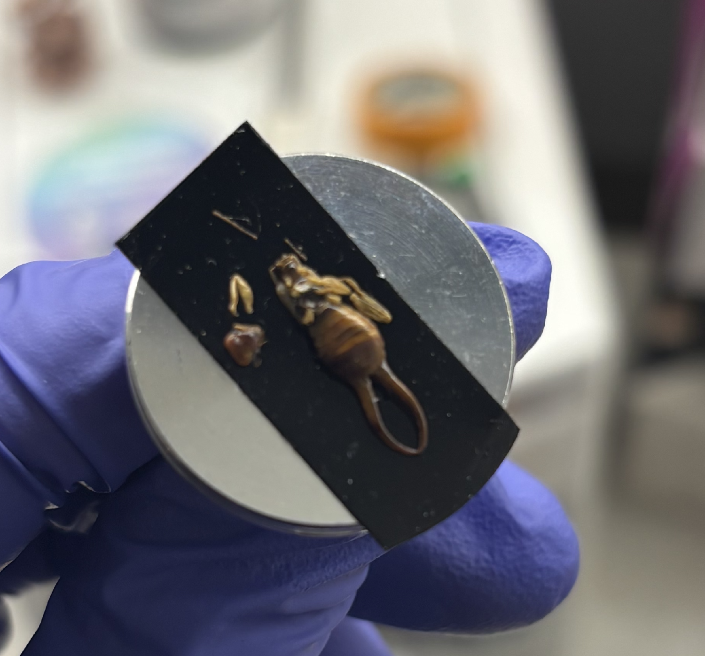
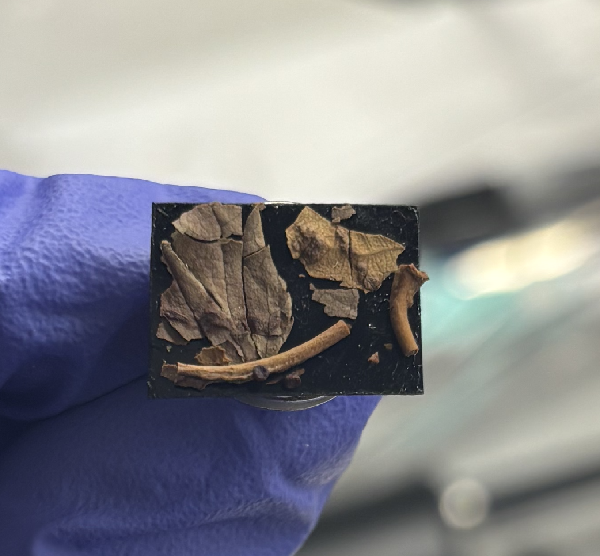
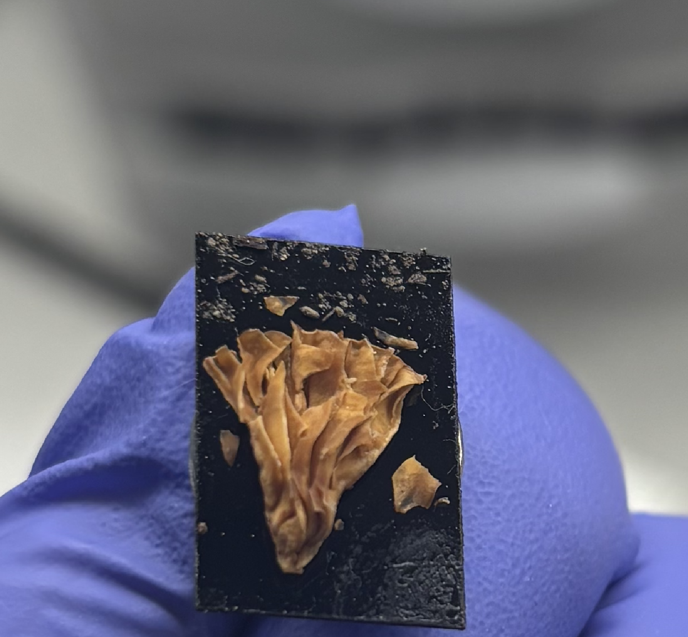
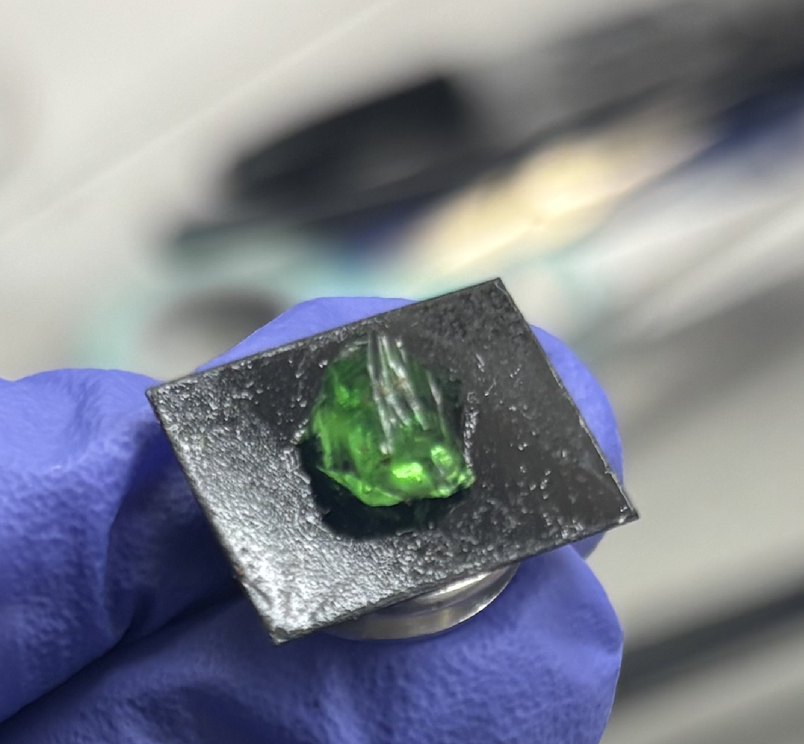

What might be hiding in some ordinary things you might see on the ground? Here are some objects that were found right on Vassar’s campus.
Tap on the red circles to see an SEM image of each object.




This is a close-up image of a dead leaf captured by the SEM. Each inch shows only 50 micrometers, which is about the width of a hair. Various cellular structures and different layers of the epidermis are visible here: The left shows the spongy layer of the leaf that makes up the inside, and the right shows the bottom of the outside of the leaf. Oval shaped holes are stomata, or openings for the leaf to release gases such as oxygen, carbon dioxide, and water vapor.
The SEM also can tell us what elements make up this image. The bright white clusters are important nutrients that may have been compartmentalized in the leaf and used for cellular processes. Some of the nutrients visible in clusters are Manganese, Silicon, and Calcium.
Tap anywhere to go back.
This SEM captured this close-up image of a mushroom. The entire image is about 800 micrometers across, which is the size of a few grains of sand. The image shows microscopic folds under a mushroom cap called lamanae.
The SEM also can tell us what elements make up this image. Oxygen, Potassium, Phosphorus, and Calcium are some examples of elements that are distributed homogeneously across the image, and are often indicative of organic material.
Tap anywhere to go back.
This SEM image shows the surface of a shard of stained glass. Each inch in this image is 100 micrometres, which is about the size of the largest cell in your body. This is a piece of oddly-shaped debris caught in a ridge in the glass.
The SEM also can tell us what elements make up this image. Silicon and Oxygen, which are the major components of glass, show up in the lighter colored parts of this image. The darker parts of the image show elements that are indicative of organic matter, such as Potassium, Calcium, and Oxygen.
Tap anywhere to go back.
The SEM took this image of the spot just next to the bug that is being observed. Each inch in this image is only 50 micrometers, which is about the width of a piece of hair. These are microscopic mites which likely had a parasitic relationship with their host organism.
The SEM also can tell us what elements make up this image. Oxygen, Potassium, and Calcium are some examples of elements that are distributed homogeneously across the image, and are often indicative of organic material.
Tap anywhere to go back.